Rubik's Cube Cheatsheet
Move Notation
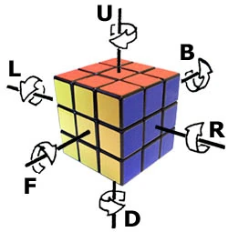
An apostrophe ' (pronounced as prime) means to turn the face in the opposite direction (counterclockwise),
e.g. L'.
U2 means to turn that face twice.
Simple 3x3x3 Cube Algorithm
1. White Cross
Goal:
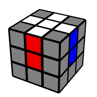
Figure that on your own ☺️
2. White Corners
Goal:
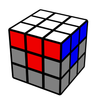
Pay attention to the matching colours on the sides.
3. Middle Layer
Now, Turn the cube upside-down. You need to fill the middle layer by moving edges from the top. Look for this pattern:
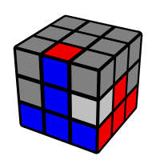
To move the top layer edge to the right, do this:
U R U' R' U' F' U F
4. Orient Yellow Cross
Look at the yellow pattern at the top. There are 3 cases.
Minus
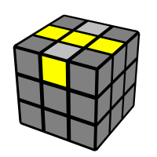
To make the yellow cross, run:
FRU R'U'F
L shape
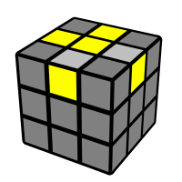
Run "Minus" algo backwards, or run it multiple times.
Dot
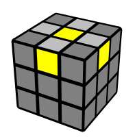
Run "Minus" algo multiple times, until you get "Minus" pattern.
5. Permute Yellow Edges
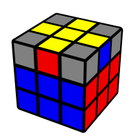
R U2 R' U' R U' R'
U'
6. Permute Last Layer

L' U R U' L U R' U'
7. Orient Last Layer
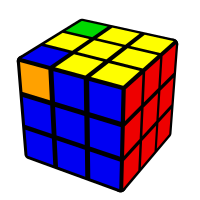
Repeat algo from step "5. Permute Yellow Edges" 2 times: 1 mirrored and 1 normal run:
L' U2 L U L' U L
R U2 R' U' R U' R'
4x4x4 Cube
Edge Parity
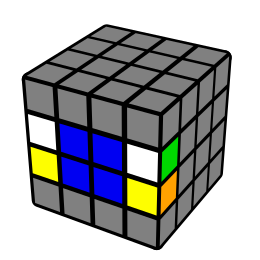
# join left bottom with right top, breaks top edge
(dD) R U' R' (dD)'
# interlace left edge with right edge
(dD) R F' U R' F (dD)'
OLL Parity
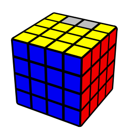
having bad edge at top, behind:
(rR) B2
(rR) U2 (rR) U2
(rR)' U2 (lL) U2
(rR)' U2 (rR) U2
(rR)' U2 (rR)' U2
PLL Parity
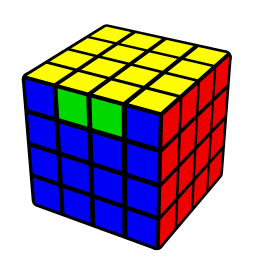
Having bad edge top, front:
r2 U2 r2 (uU)2 r2 u2